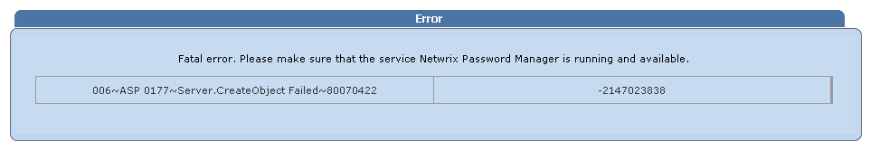
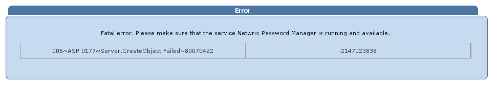
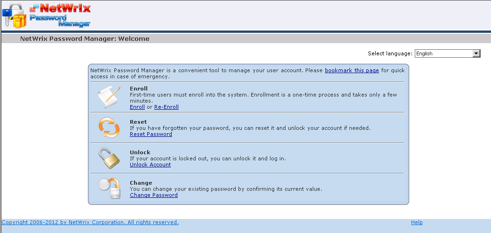
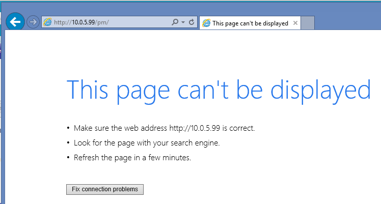
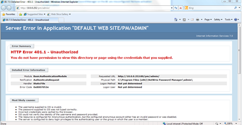
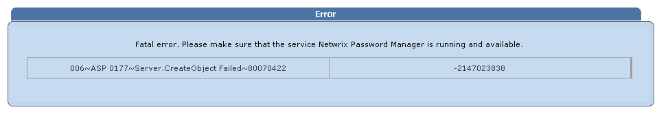
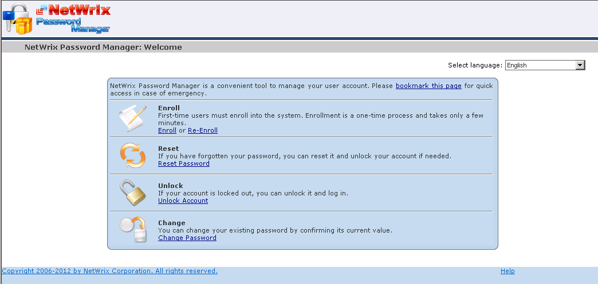
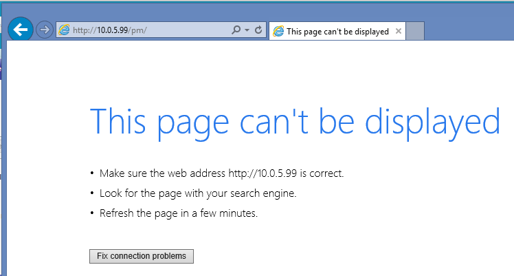
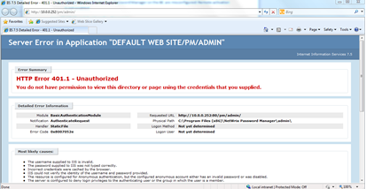

Installation of Password Manager Web-sites in DMZ can cause several issues. This KB
describes the most common issues and solutions. NOTE. To troubleshoot a DMZ
installation all 3 portals must be tested as there are several scenarios.
Issue 1: Portals never load just stay blank in loading state

Explanation: Refer to the KB1315 --------------- Issue 2: Self Service portal does not load at all, Admin and Helpdesk portals return an Server.CreateObject Failed error:
 

Explanation: Refer to the KB1314. --------------- Issue 3: Self Service portal does not load at all, Admin and Helpdesk portals return an Server.CreateObject Access error:


Explanation: Refer to the KB1308. --------------- Issue 4: Self-Service portal works fine, while Admin and Helpdesk returns the Server.CreateObject Access error:

Explanation: Specific for non-domain front-end server. Refer to the KB1310. --------------- Issue 5: Admin and Helpdesk portals works, but Self-service returns an error or does not load at all

Explanation: Refer to the KB1303. --------------- Issue 6: Self-Service portal works fine but I get 401 - Unauthorized error on Admin and Helpdesk portals.

Explanation: You need to use accounts that the front-end is aware of and which have appropriate rights on the front-end server. Refer to the KB1368 in case of a non-domain front-end
Explanation: Refer to the KB1315 --------------- Issue 2: Self Service portal does not load at all, Admin and Helpdesk portals return an Server.CreateObject Failed error:
Explanation: Refer to the KB1314. --------------- Issue 3: Self Service portal does not load at all, Admin and Helpdesk portals return an Server.CreateObject Access error:
Explanation: Refer to the KB1308. --------------- Issue 4: Self-Service portal works fine, while Admin and Helpdesk returns the Server.CreateObject Access error:

Explanation: Specific for non-domain front-end server. Refer to the KB1310. --------------- Issue 5: Admin and Helpdesk portals works, but Self-service returns an error or does not load at all

Explanation: Refer to the KB1303. --------------- Issue 6: Self-Service portal works fine but I get 401 - Unauthorized error on Admin and Helpdesk portals.

Explanation: You need to use accounts that the front-end is aware of and which have appropriate rights on the front-end server. Refer to the KB1368 in case of a non-domain front-end